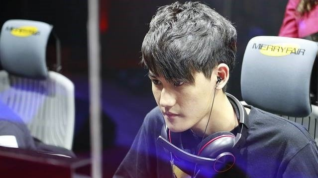
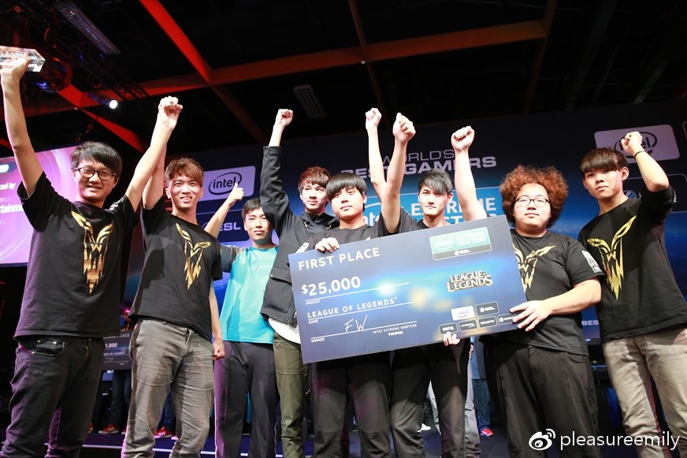
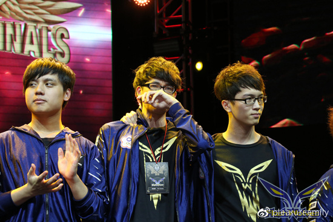
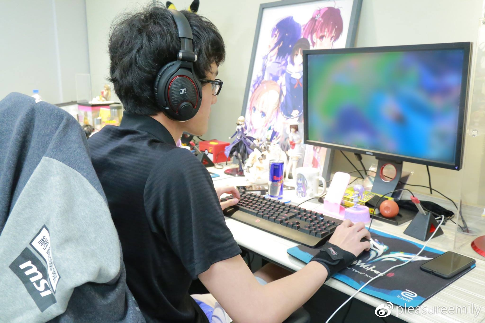
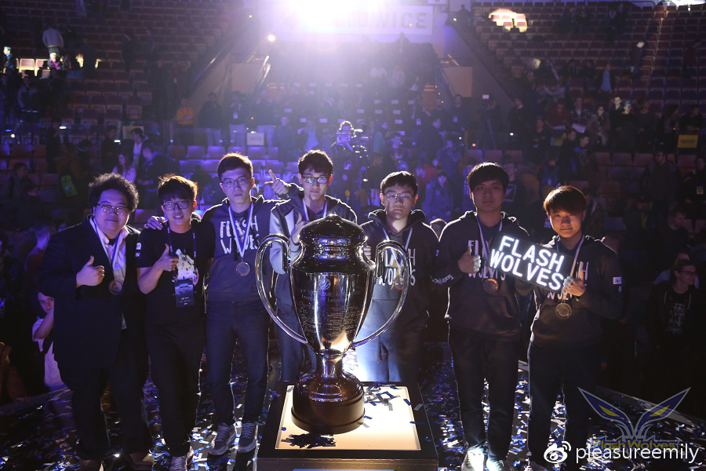

Karsa 洪浩轩
生日：1997/2/14
身高：181cm
体重：57kg (纪录时间为2017年初）
体脂率：10
兄弟姊妹: 有一個哥哥
第一个效力的职业战队为Machi17，但为期不长鲜为人知，台湾台中人，是闪电狼上单MMD的邻居跟好友，當初由MMD介绍引进闪电狼，於2015年春季加入闪电狼，当时也是闪电狼初次晋级一级联赛，春季赛初期战绩浮沈，在IEM5台北地区赛时，闪电狼换上Karsa打野展现全新的配合阵容跟默契，直接连胜两天拿到出国资格。
IEM5 台北站
2016年起担任闪电狼队长直到离开，曾于2015夏季赛后半遇到瓶颈，当年最后资格赛打败HKE取得LMS最后一张世界赛门票，比赛后泪洒舞台。2016年春季季后赛，夺冠取得季中赛出赛资格时，在比赛最后高举双手大喊：「上海的美食我们来啦！」。2017年夏季赛也曾因压力过大而在游戏结束前跳game，被队伍惩罚禁赛并被遣返回家冷静，几周后从回赛场的第一场比赛，却再次因为手滑而跳game，这回纯属无心的耍笨事件。
2015資格賽後淚灑舞台
出道前以台服狮子王着称，出道后则以豹女丶雷克萨丶螳螂丶瞎子等进攻型英雄出名。
是个自我要求很高，却又有点内心纤细的选手，细数起来应该是闪电狼中第二爱哭的选手。非常宅，放假也几乎不出门，最多就是去逛漫画模型店，非常喜欢美少女动漫模型，是个重度二次元宅，以前在闪电狼桌上还摆放三层模型架。
桌上滿滿的二次元周邊
因为出生日期的关系被称为电竞情人，也确实拥有广大女粉丝。被后勤跟朋友形容很像猫，不熟的时候很冷漠会躲人，但熟了之后就很放肆；对陌生人据说是相当有礼貌，2015年初登板时，掳获了LMS主播汤米的心，腼腆的背后，其实是闪电狼的干话（类似于骚话）王，曾在主播台上说过经典名句为：『这场bo5中，先拿下三场的会获胜』。胆子不大，玩outlast时也是相当惊慌失措。
曾对退役队友告白：少了你的训练室就像玉米蛋饼少了玉米一样。有段时间热衷于调戏自己这位退役的队友。认识不少其他赛区的选手，已知跟他关係不错的国外选手有TSM bjergsen跟SKT Blank等人，在LMS的时候人缘也不错，跟前TPA打野winds（已退役）关係特别好，会戏称为父子，winds养的第一隻猫还取名为karsa。
IEM7 冠軍頒獎合照
曾经代表LMS参加过三届全明星赛，最高的赛事成就为IEM7 总冠军，那年IEM以修电脑闻名，队友爆料Karsa的画面其实一度严重延迟并卡格，但因为大家都太累不想再喊暂停，就硬着头皮打下去，比赛结束后Karsa自嘲参加了一回LCS EU。最高的Ｓ系列赛成就是2015年八强。